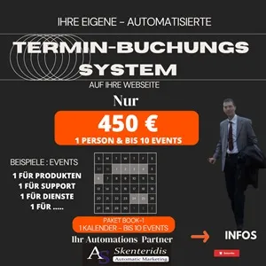

Trust Marketing Automations: Mehr positive Bewertungen. Mehr
Produktprofil · Marktplatz-Daten 2026-10-14 · Verkaufsseiten-Recherche 2026-10-14 · Kategorien: Online Marketing & E-Business, Email Marketing, Marketing Services
- Trust Marketing Automations: Mehr positive Bewertungen. Mehr ist ein/e Elektronische Dienstleistung in Online Marketing & E-Business und Email Marketing, vertrieben über den Digistore24-Marktplatz von Anbieter Skenteridis, gelistet seit 2026-09-23.
- Listenpreis $548.21 (single payment) — Checkout, Auslieferung und Rückerstattungen laufen über Digistore24 selbst, nicht über den Anbieter.
- Käuferschutz: keine standardisierte Garantie-Formulierung gefunden — Rückerstattungsbedingungen vor der Zahlung auf der offiziellen Seite prüfen.
Interesse an Trust Marketing Automations: Mehr positive Bewertungen. Mehr? Aktueller Preis, Boni und Garantiebedingungen finden Sie auf der offiziellen Seite des Anbieters:
Offizielle Verkaufsseite ansehen
Affiliate-Link (Werbung) — wir verdienen ggf. eine Provision, ohne Mehrkosten für Sie.
Marktplatz-Daten
| Produkttyp | Elektronische Dienstleistung |
|---|---|
| Preis | $548.21 (Single payment) |
| Garantie/Rückgabe | Laut Verkaufsseite des Anbieters — vor dem Kauf auf der offiziellen Seite prüfen |
| Anbieter | Skenteridis (gelistet seit 2026-09-23) |
Marktplatz-Beschreibung des Anbieters
AUTOMATISIERTE TRUST-MARKETING & REPUTATION MARKETING ERSTELLEN ICH ERSTELLE IHRE DIGITALE AUTOMATISCHE per EMAIL BEWERTUNGS-KAMPAGNE „Mehr positive Bewertungen. Mehr Vertrauen. Eine stärkere Reputation. Mehr Kunden.“ #0 Bewertungskampagnen in 3 Sprachen – automatisch & professionell #1 Automatische Bewertungsanfrage nach jedem Kundenkontakt #2 Nach jedem Verkauf, Seminar, Beratungsgespräch & Service #3 Mehr positive Bewertungen in kürzerer Zeit generieren #4 Kunden systematisch zur Abgabe einer Bewertung motivieren #5 Positive Kundenerfahrungen gezielt hervorheben #6 Bewertungen von Kunden mit jeder E-Mail-Adresse ermöglichen #7 Intelligente E-Mail-Automationen mit Klick-Tipp #8 Segmentierung, Tagging & individuelle Bewertungsstrecken #9 Vertrauen, Reputation & Sichtbarkeit nachhaltig steigern #10Mehr Bewertungen → mehr Vertrauen → mehr Kunden & Umsatz Schauen Sie hier unsere Infos & Video, was können wir für Euch tun sehr günstig
Von der Verkaufsseite des Anbieters
Seitentitel: bewertungskampagne-trustmarketing-reputationmarketing-1sprache-digistore - Robotics Marketing AI Workflows
Hauptüberschrift
Grosse Erfahrung seit 2015
Ich trainiere mich täglich 1-3h auf Automatisierungen um Euch auf höchsten Niveau zu bedienen
Abschnitts-Überschriften
- RISIKOSICHER
- RATENZAHLUNGEN MÖGLICH
- (Erste Rate etwa 25-30% des gesamtes Wertes)
- MEINE DIESTLEISTUNGEN UND PRODUKTEN
- Testimonials 2025
- Was sagen Kunden
Einstiegstext
„Mehr positive Bewertungen. Mehr Vertrauen. Eine stärkere Reputation. Mehr Kunden.“
Für Unternehmer (Klein-Mittel-Gross) und-Verkäufer , Coaches, Trainer oder Agenturen, die ihre Produkte oder Programme professionell per E-Mail vermarkten möchten – ohne sich selbst mit Technik, Automationen und Segmentierungen beschäftigen zu müssen.
Du bekommst 1 komplette fertige funktionierte Bewertungkampagne für dein Business ,
Einrichtung und Pflege Den Inhalt der Email, sollst du uns geben Optimierung deiner E-Mail-Sequenzen Email Kampagnen & Newsletter
Recherche-Methode: rohes HTML · 1364 Wörter · Qualität: rich · recherchiert am 2026-10-14. Vollständige Recherche-Datei (MD) ↗
Wie Produkte dieser Art geliefert werden
Allgemeiner Hinweis zu diesem Produkttyp (keine anbieterspezifische Anleitung): Remote-Dienstleistungen werden elektronisch erbracht — der Anbieter meldet sich nach dem Kauf. Für die genaue Anwendung von Trust Marketing Automations: Mehr positive Bewertungen. Mehr sind die offizielle Verkaufsseite und die enthaltenen Materialien maßgeblich.
Weitere Bilder (von der Verkaufsseite des Anbieters)


Bilder stammen von der offiziellen Verkaufsseite des Anbieters und zeigen das Produkt, wie es beworben wird.
Gut zu wissen
- Hoher Preis: $548.21 ist eine erhebliche Ausgabe — prüfen Sie, ob es einen Zahlungsplan gibt, und vergleichen Sie zuerst die günstigeren Alternativen der Kategorie.
- Keine Garantie-Formulierung in unserer Recherche gefunden — bestätigen Sie das Rückgabefenster auf der offiziellen Seite, bevor Sie kaufen.
- Hinweise der Verkaufsseite (wörtlich, nicht von uns geprüft): „"Ich empfehle Avraam Skenteridis mit Augen zu. Ich bin Arzt in Thessaloniki mit ein Praxis für Pathologie und er hat mir ein Terminbuchungssystem erstellt und meine Webseite etwa 1 Tausend euro. Unglaublich. Diese Preis/Value gibt es im Markt nicht. Nur eins war negative. Er war inzwischen 1 Woche Krank und hat 1 Tag genau verspätet als versprochen. ""
Was ist Trust Marketing Automations: Mehr positive Bewertungen. Mehr?
Trust Marketing Automations: Mehr positive Bewertungen. Mehr ist ein/e elektronische dienstleistung in der Kategorie Online-Marketing & E-Business des Digistore24-Marktplatzes, veröffentlicht von Anbieter Skenteridis und im Verkauf seit 2026-09-23. Der Anbieter beschreibt es so: "AUTOMATISIERTE TRUST-MARKETING & REPUTATION MARKETING ERSTELLEN ICH ERSTELLE IHRE DIGITALE AUTOMATISCHE per EMAIL BEWERTUNGS-KAMPAGNE „Mehr positive Bewertungen. Mehr Vertrauen. Eine stärkere Reputation. Mehr Kunden.“ #0 Bewertungskampagnen in 3 Sprachen – aut" (Marktplatz-Beschreibung des Anbieters, leicht gekürzt).
Trust Marketing Automations: Mehr positive Bewertungen. Mehr Preis: was Sie zahlen
Der Marktplatz listet Trust Marketing Automations: Mehr positive Bewertungen. Mehr zum $548.21 Preis (single payment). Digistore24 fügt im Checkout die gesetzliche Steuer Ihres Landes hinzu — dort sehen Sie den Endbetrag vor der Zahlung. Eine separate Plattformgebühr gibt es nicht; Anbieter können eigene Upsells nach dem Checkout anbieten.
Trust Marketing Automations: Mehr positive Bewertungen. Mehr Rückerstattung und Geld-zurück-Garantie
Wir haben keine standardisierte Garantie-Formulierung auf der Verkaufsseite gefunden. Rückerstattungen für Digistore24-Käufe laufen über die Plattform: Antrag über den Support-Link in Ihrer Bestell-E-Mail, innerhalb des Garantiezeitfensters, das im Checkout angezeigt wird. Praktischer Rat: Entscheiden Sie innerhalb des Fensters — wenn das Produkt unter den Erwartungen bleibt, erstatten lassen statt irren lassen.
Mechanik im Detail: So funktionieren Digistore24-Rückerstattungen.
Für wen ist Trust Marketing Automations: Mehr positive Bewertungen. Mehr geeignet?
Basierend auf der Online-Marketing & E-Business-Einordnung und der single payment-Abrechnung richtet sich Trust Marketing Automations: Mehr positive Bewertungen. Mehr an Käufer, die online-marketing & e-business-Lösungen suchen und ein Budget für einen Premium-Kauf eingeplant haben. Der ehrliche Test ist nicht die Kategorie, sondern Ihre eigene Situation: Werden Sie es realistisch innerhalb des Garantiefensters nutzen? Wenn ja, ist der Preis eine Investition; wenn nein, ist er Ballast — unabhängig von der Qualität.
Ist Trust Marketing Automations: Mehr positive Bewertungen. Mehr seriös? Was Sie vor dem Kauf prüfen
Wir bewerten keine Seriosität — das kann niemand, ohne das Produkt zu nutzen. Prüfbare Punkte, alle auf dieser Seite: die Marktplatz-Historie des Anbieters (im Verkauf seit 2026-09-23), die wörtlichen Verkaufsseiten-Auszüge unten (gekennzeichnet als Anbieteraussagen — deren Werbung, nicht unsere Empfehlung), die Garantiebedingungen im Checkout und die Auslieferungsart. Vorsichtsignale bei jedem Angebot: Countdown-Dringlichkeit gepaart mit vagen Rückerstattungsbedingungen, Testimonials ohne Datum und Anbieterseiten, die den Preis bis zum Checkout verstecken.
Wie kommen Sie nach dem Kauf an Trust Marketing Automations: Mehr positive Bewertungen. Mehr?
Der Checkout läuft über Digistore24. Nach der Zahlung: Remote-Dienstleistungen werden elektronisch erbracht — der Anbieter meldet sich nach dem Kauf. Bewahren Sie die Bestell-E-Mail auf — sie ist Ihr Schlüssel zum/d zur elektronische dienstleistung, zu Rückerstattungsanträgen und zum Digistore24-Käufersupport.
Trust Marketing Automations: Mehr positive Bewertungen. Mehr Erfahrungen: so recherchieren Sie richtig
Die meisten „Erfahrungsberichte" zu Marktplatz-Produkten sind Affiliate-Inhalte — einschließlich Seiten wie dieser, die an Käufen mitverdienen. Behandeln Sie jeden Bericht (auch unseren) als Ausgangspunkt und prüfen Sie gegen Primärquellen: die Verkaufsseite des Anbieters, die Digistore24-Rückerstattungsrichtlinie und — für online-marketing & e-business — unabhängige Communities außerhalb des Affiliate-Ökosystems. Auf dieser Seite sind die Verkaufsseiten-Auszüge unten wörtlich zitiert, damit Sie die Aussagen des Anbieters bewerten können, ohne wegzuklicken.
Wie Sie Trust Marketing Automations: Mehr positive Bewertungen. Mehr sicher kaufen
- Öffnen Sie die offizielle Verkaufsseite und lesen Sie das vollständige Angebot.
- Bestätigen Sie Endpreis und Garantiezeitfenster auf der Digistore24-Kassenseite — sie ist bindend, kein Vergleichsportal.
- Zahlen Sie innerhalb des Digistore24-Checkouts (niemals per Überweisung oder Off-Platform-Links).
- Speichern Sie die Bestellbestätigung; notieren Sie die Rückerstattungsfrist im Kalender.
- Prüfen Sie zügig. Der Digistore24-Käufersupport hilft, wenn der Anbieter nicht reagiert.
Vollständiges Recherche-Archiv für dieses Produkt (Markdown: kompletter Marktplatz-Datensatz + wörtliche Verkaufsseiten-Auszüge): Trust Marketing Automations: Mehr positive Bewertungen. Mehr — vollständiges Datenarchiv (Markdown-Datei: 59571-trust-marketing-automations-mehr-positive-bewertungen-mehr.md).
- Listenpreis & Abrechnung — Quelle: offizielle Digistore24-Marktplatz-API, Stand 2026-10-14. Maßgeblich für den aktuellen Preis ist immer die Kassenseite.
- Verkaufsseiten-Zitate — Quelle: https://robotics-marketing.com/de-landing/bewertungskampagne-trustmarketing-reputationmarketing-1sprache-digistore/, abgerufen 2026-10-14 (Methode: rohes HTML). Verify: offizielle Seite öffnen.
- Garantie / Rückgabe — vom Anbieter festgelegt; vor dem Kauf auf der Verkaufsseite bestätigen.
- Nicht von uns geprüft: Produktqualität, Ergebnisse, Testimonials — kein Praxistest für dieses Listing durchgeführt.
Häufige Fragen zu Trust Marketing Automations: Mehr positive Bewertungen. Mehr
Antworten aus dem Marktplatz-Snapshot (2026-10-14) und der Verkaufsseiten-Recherche (2026-10-14); Anbieteraussagen sind inline gekennzeichnet.
Was ist Trust Marketing Automations: Mehr positive Bewertungen. Mehr?
Trust Marketing Automations: Mehr positive Bewertungen. Mehr ist ein Angebot des Typs „Elektronische Dienstleistung" im Digistore24-Marktplatz, Anbieter: Skenteridis, gelistet seit 2026-09-23. Eingepflegt unter Online-Marketing & E-Business und E-Mail-Marketing. Digistore24 wickelt Checkout, Lieferung und Rückgaben ab.
Wie viel kostet Trust Marketing Automations: Mehr positive Bewertungen. Mehr?
Der Digistore24-Marktplatz listet es für $548.21 (single payment). Preise legt der Anbieter fest und können sich ändern — der Marktplatz-Eintrag oben zeigt den Schnappschuss; die offizielle Verkaufsseite zeigt den aktuellen Preis.
Gibt es eine Geld-zurück-Garantie für Trust Marketing Automations: Mehr positive Bewertungen. Mehr?
Unsere Verkaufsseiten-Recherche hat keine explizite Garantie-Formulierung gefunden. Viele Digistore24-Produkte bieten 60 Tage Geld-zurück, aber das legt jeder Anbieter selbst fest — bestätigen Sie es auf der offiziellen Verkaufsseite, bevor Sie kaufen.
Ist Trust Marketing Automations: Mehr positive Bewertungen. Mehr seriös?
Wir bewerten keine Seriosität — wir veröffentlichen überprüfbare Zahlen: Anbieter Skenteridis (gelistet seit 2026-09-23), mit der vollständigen Verkaufsseiten-Recherche archiviert auf dieser Seite (Anbieteraussagen als solche gekennzeichnet). Lesen Sie unsere 6-Punkte-Bewertungsmethode und entscheiden Sie anhand der Zahlen — oder diskutieren Sie Trust Marketing Automations: Mehr positive Bewertungen. Mehr auf GitHub.
Wo kann ich Trust Marketing Automations: Mehr positive Bewertungen. Mehr sicher kaufen?
Nur über die offizielle Verkaufsseite, die auf dieser Seite verlinkt ist (Checkout und Rückgaben laufen über Digistore24). Prüfen Sie dort Preis und Garantie vor der Bestellung. Der Link ist ein Affiliate-Link — der Kauf unterstützt diese Website ohne Mehrkosten für Sie.
Wie erhalte ich Trust Marketing Automations: Mehr positive Bewertungen. Mehr nach der Zahlung?
Der Checkout läuft über Digistore24: Nach der Zahlung erhalten Sie Ihren Zugang oder Download per E-Mail und in Ihrem Digistore24-Kundenkonto. Lieferdetails für diesen Produkttyp: Remote-Dienstleistungen werden elektronisch erbracht — der Anbieter meldet sich nach dem Kauf. Bei Problemen kann der Digistore24-Käufersupport Ihre Bestellung wiederherstellen.
Alle 50 Käuferfragen zu Online-Marketing & E-Business — das komplette Kategorie-FAQ.
Trust Marketing Automations: Mehr positive Bewertungen. Mehr auf Reddit diskutieren
In Community-Threads vergleichen echte Käufer Erfahrungen. Wir verlinken Communities, keine einzelnen Posts — Threads verschwinden, Subreddits bleiben:
- r/Unternehme — deutschsprachige Community mit Diskussionen zu online marketing & e-business.
- r/Vertrieb — deutschsprachige Community mit Diskussionen zu online marketing & e-business.
- Reddit-Suche nach „Trust Marketing Automations: Mehr positive Bewertungen. Mehr" — Live-Ergebnisse, von uns nicht beeinflusst.
- Top-„Erfahrungs"-Treffer dieses Jahr — selbst nach Aktualität filtern.
Passendes auf Amazon.de
Physische Produkte und Zubehör, die häufig zusammen mit Trust Marketing Automations: Mehr positive Bewertungen. Mehr gekauft werden:
- Marketing Bücher auf Amazon.de — Top-Ergebnisse, Amazon-Ranking.
- Bestseller: Marketing Bücher — live Liste von Amazon, von uns nicht kuratiert.
Werbung: Als Amazon-Partner verdient DigistorePicks DE an qualifizierten Käufen (Partner-tag adminstorede-21). Amazon setzt eigene Preise und Provisionen (niedrige einstellige Prozente — weit unter den 30–75% der Digistore24-Anbieter). Amazon ist ein Convenience-Angebot für Sachprodukte, kein Ersatz für das digitale Produkt oben.
Ähnliche Angebote in Online-Marketing & E-Business

SHOWUP 3 Monate Strategie- und Umsetzungsbegleitung für dein Business. Du steckst Zeit und Arbeit in deinen Content, feilst an Angeboten und denkst über deine P

Bis zu 1.046 € Provision pro Empfehlung — mit einem Produkt, das sich von selbst verkauft. Stell dir vor, du empfiehlst ein Produkt, das nicht nur gut konvertie

Verdiene 50% Provision mit der #1 Masterclass für Online-Kurs-Business Promote das kostenlose Online Training „Online Kurse erstellen und passiv verkaufen mit K

Das ist die mächtigste Social-Media-Kooperation, die der deutschsprachige Raum jemals gesehen hat. Wenn die TikTok-Ikone Social Media Buddy , der den Algorithmu
Weitere Angebote von Skenteridis
Gesamtes Sortiment: Skenteridis Anbieter-Hub — alle Listings mit Marktplatz-Daten.

Professionelle ESHOP erstellen ��� mit WP WooCommerce“ Nur mit 2.499 € Basic Paket #0 Eshop in Woocommerce or Shopify erstellen mit kostenlosen Themes #1 Eshop

ESHOP ERSTELLEN voll funktionsfähigen ” Professionelle Basic Shopify Eshop “ Nur mit 1.799 € #1 Eshop in Shopify erstellen voll funktionsfähig #2 Verknüpfen mit
FULLPAGE WEBSEITE ERSTELLEN ” 5-10 Page “ Nur mit 899 € #1 Alles Wichtige in 5-10 Seiten Responsive Seite #2 Nach Ihre Bedürfnisse. Fotos,Texte,Videos #3 Dienst

NIE MEHR TERMINE – VERPASSEN Sichern Sie Sich Ihre Termin Buchungssystem - Ich erstelle Ihre Kalender mit bis 10 Events Nur mit 450 € #0 Diese Preis Für 1 Perso
Trust Marketing Automations: Mehr positive Bewertungen. Mehr ist auch gelistet in
E-Mail-Marketing (137 Produkte) · Marketing-Dienstleistungen (287 Produkte)
Ähnliche Preislage in Online-Marketing & E-Business

Revolutionäre Geschäftsmöglichkeit! Verdiene bis zu 2500€ pro Partner Erreiche mit Leichtigkeit 10.000+ Euro Provision durch unsere 4 Vergütungswege: Vermarkte

⭐ Unser Bestseller: Moneyflow Income System Bewirb unser einsteigerfreundliches Online-Kurs-System im Bereich Affiliate-Marketing & Online Geld verdienen un

Vermarkte den Self Publishing Masterkurs! Du bekommst dafür 50% Provision ! Und für alle weiteren Upsells gibt es ebenfalls Provision! Für dieses Produkt bekomm

Matzes Online-Business-Werkstatt bündelt sieben schriftliche Praxiskurse mit allen sieben Zusatzpaketen für einmalig 499 €: Canva, Etsy, Pinterest, Social Media
Ähnliche Suchanfragen
Wo Sie es sich ansehen können
Wo Sie es sich ansehen können
Aktuelle Preise, Garantie und Boni finden Sie auf der offiziellen Verkaufsseite:
Offizielle Verkaufsseite ansehen
Das ist ein Affiliate-Link (Werbung) — kaufen Sie darüber, verdienen wir ggf. eine Provision, ohne Mehrkosten für Sie.
Quellen & weiterführende Informationen
- Offizielle Verkaufsseite (aktueller Preis, Garantie, Boni): robotics-marketing.com/de-landing/bewertungskampagne-trustma (Affiliate-Link)
- Öffentliche Digistore24-Produktseite: checkout-ds24.com/product/727806
- Vollständige Recherche-Datei (Markdown, versioniert): content/products/59571-trust-marketing-automations-mehr-positive-bewertungen-mehr.md
- Affiliate-Supportseite des Anbieters: robotics-marketing.com/de-landing/affiliate-partner-webdesig
- Marktplatz-Kategorie: Online-Marketing & E-Business
Wie wir Produkte wie Trust Marketing Automations: Mehr positive Bewertungen. Mehr bewerten
Sechs Prüfungen, ausschließlich mit offiziellen Marktplatz-Zahlen. Die vollständige Bewertungsmethode lesen · unsere Recherche-Standards & Kennzeichnung.
Fragen oder eigene Erfahrungen mit Trust Marketing Automations: Mehr positive Bewertungen. Mehr?
Praxis-Tests veröffentlichen wir erst, nachdem wir ein Produkt selbst gekauft haben — aber Ihre Erfahrung hilft anderen Lesern: Diskussion zu Trust Marketing Automations: Mehr positive Bewertungen. Mehr auf GitHub starten/verfolgen. Falsche Zahl gefunden? Korrektur melden — jede Seite zeigt ihre Datenstände, Korrekturen gelten für die ganze Website.